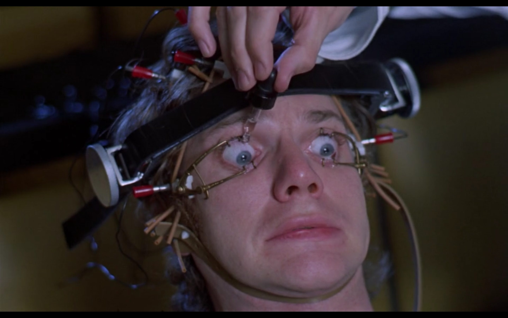

怨：埋怨、抱怨、怨天尤人。
怨，是一种面对问题时司空见惯但成本和效率极低的处理方式。
无论市面上对“创业”有多少高大华丽的表述，其本质不过是一种为实现目标而随时随地解决问题的工作模式。《快乐飞行》中有一场戏：起飞前，一名去度蜜月的新婚妻子因为恐飞而躲在卫生间里不肯出来，任凭她老公和地服人员怎么安慰都不行。眼瞅着航班就要延误，地服经理来了，摆事实讲道理，软磨硬泡终于把她劝上了飞机。当地服人员向经理报以掌声和敬仰之情时，经理一脸严肃地奔赴下一个需要他的问题现场，没有一句废话。
抱怨不仅解决不了问题，还只会给周围的人带来负面的感受，影响大家的工作效率，进而营造出糟糕的团队氛围。
人都是很难准确认识自己的，很多大公司里的中高管更是逃脱不了这个魔咒。一些人，位置爬得越来越高、脾气嗓门越来越大、真知灼见越来越少、抱怨批评越来越多。最终如彼得定律所说，爬到他不能胜任的位置便停了下来。这些人平时的抱怨，由于上有大公司、大品牌的庇护，下有打工人的兜底，对公司的命运通常来讲也不会有多大的杀伤力，往往就像屁股上的牛皮癣一样，也就内部一些人知道，外面的人还以为多么光鲜靓丽呢。然而在这些中高管中，一些人不能正确地衡量自己的实力和外部因素的影响，动不动就埋怨猪一样的队友与泥潭一样的公司，时间长了，索性拍案而起，做自己的 CEO。
等他们注册好公司、找来一笔钱、支起个摊儿，很快便发现，以前处处哈着自己的那拨人，现在要想见个面都得跟对方秘书预约了；以前使个眼色就能卖出去产品，现在跪地舔鞋都未必能拿到单子。然而一些人在分析和诠释困境的时候，我常听到这样一句话：“那帮傻哔不给机会！”
判断一个人是不是真正的傻哔，就看是否在他眼里别人都是傻哔。

但是，抱怨又是人性中那么常见的一个组成部分。谁人背后不说人，谁人背后无人说。通常，人们在抱怨的时候都不会意识到自己正在抱怨。作为团队的带头人，抱怨不仅无益于达成目标，更有害于士气，亦会损伤自己的领导力。怎样能够克服掉人性中的这一弱点呢？像《发条橙》那样，强迫自己多观察别人的抱怨，看到恶心看到烦，自然有助于在自己下回刚要抱怨的时候及时叫停。